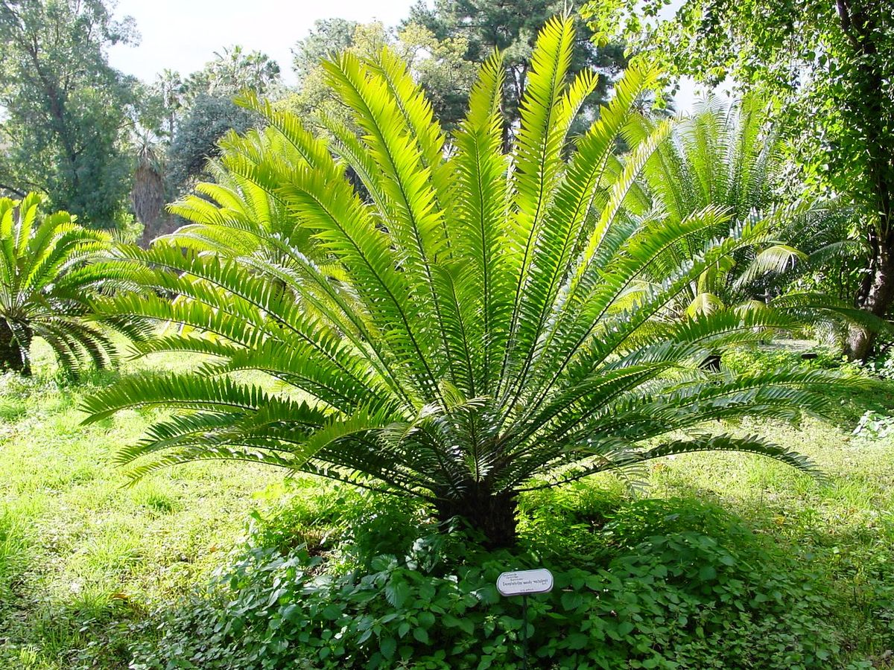
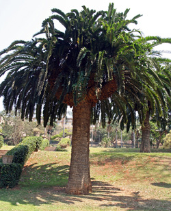
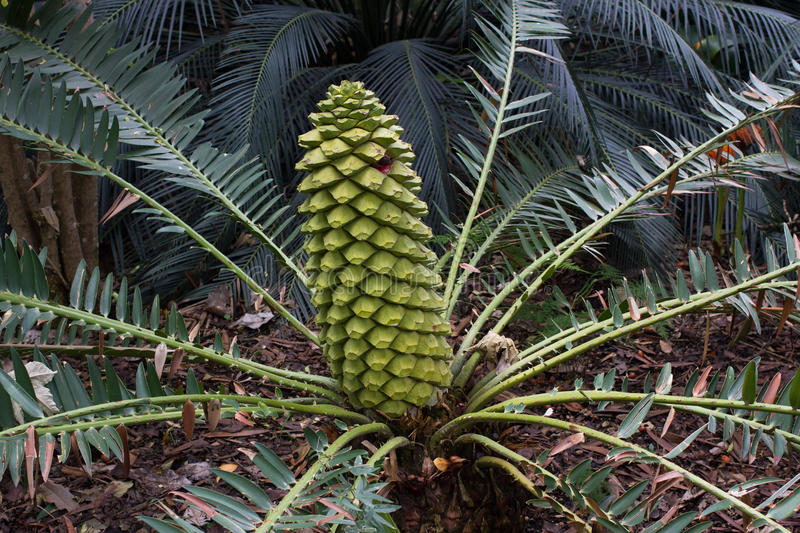
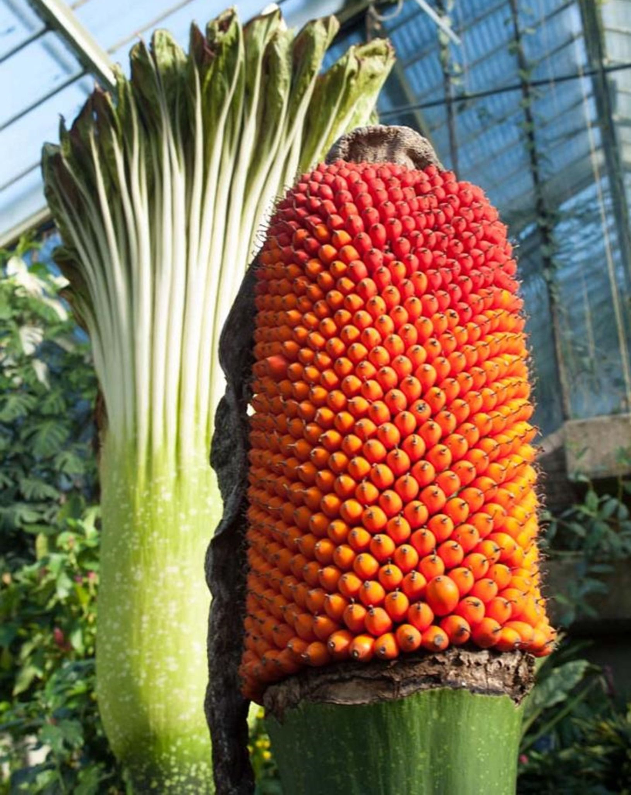
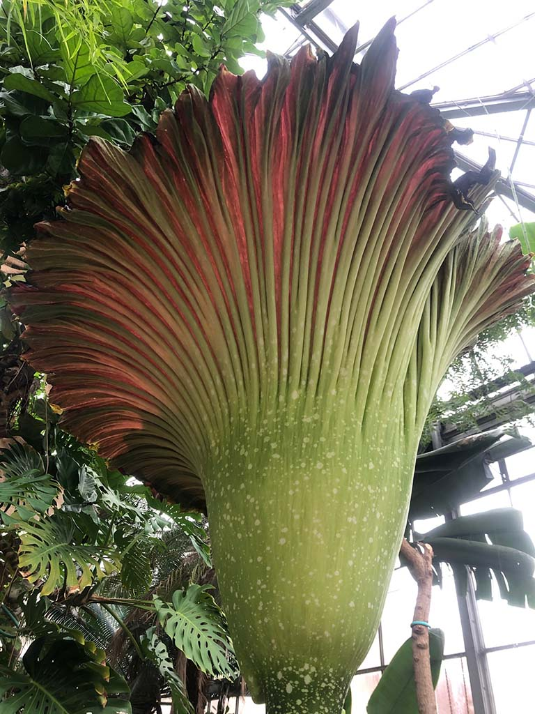
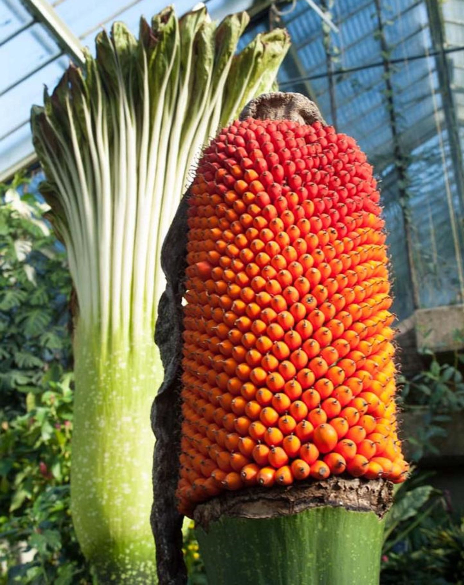
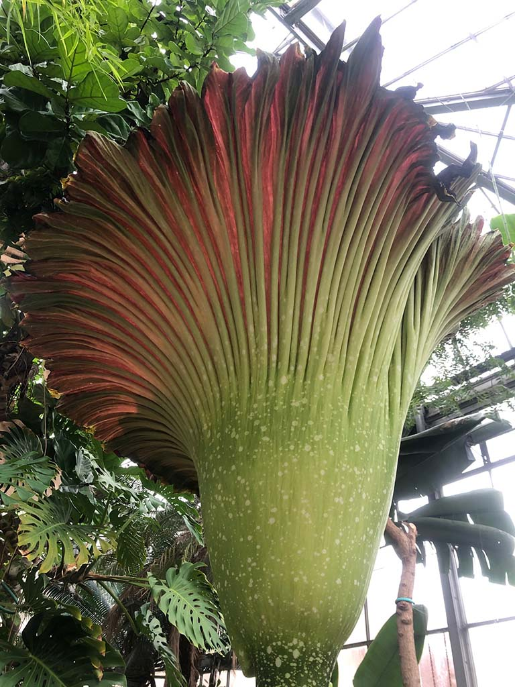
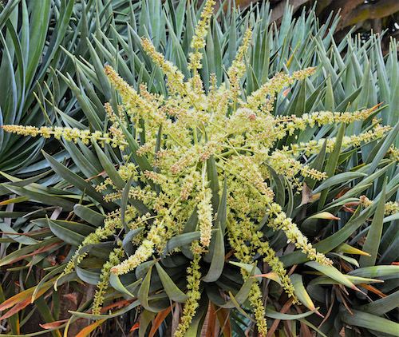
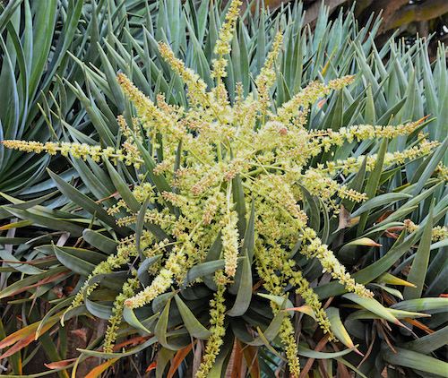

ENCEPHALARTOS WOODII
  
Encephalartos woodii, Wood's cycad, is a rare cycad in the genus Encephalartos.
Encephalartos woodii is famous for being extinct in nature, and for the fact that there is no known female specimen on Earth.
Structure of Encephalartos woodii
Structure of Encephalartos woodii
Encephalartos woodii is a very handsome plant. The leaves are a dark glossy green, 2 to 3 m long, with a gracefully arching shape, giving this cycad a dense umbrella-shaped crown, even in young specimens. The Kirstenbosch specimen is unbranched, but mature specimens are often branched at the crown.
Are Encephalartos woodii extinct?
It is the only specimen to ever have been found in the wild. Not only does this make the plant now extinct in the wild – it also means there is little hope of Encephalartos woodii reproducing naturally.
How do you grow Encephalartos?
This species is one of the most attractive of the larger cycad species and responds well to cultivation in frost-free areas, with regular watering in the dry months. Good drainage is essential and protection from sun in very hot areas will help to prevent the leaves from burning.
Are encephalartos woodii poisonous?
Encephalartos seeds, however, are extremely toxic, not the fleshy pulp that is eaten by birds, baboons, monkeys, rodents and bats, but the hardcoated kernel.
What are the uses of Encephalartos woodii ?
- Thunberg and other early travellers recorded that the local tribes used cycad trunks as a source of food (note that Cycads is toxic and it needs a 3 month fermentation process to break down those toxins!)
 





 
